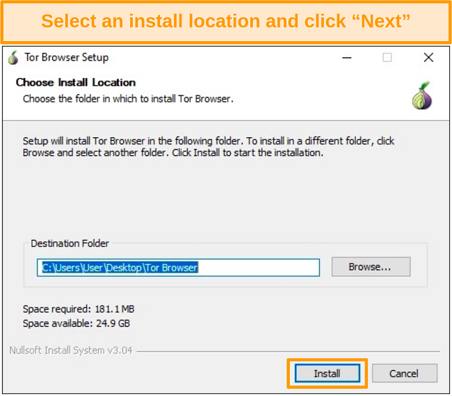

(If the website doesn't work use a VPN then try again)
2.For Windows, go to the folder where you downloaded the file and open the installer. On macOS, drag this file into the “Applications” folder.

3.Select your language, click next.
4.Select the installation location.

5.After the installation, go to the folder where it’s installed. Click “Start Tor Browser.”

for Linux:
Go to torproject.org/download/.
Download the .tar.xz file for Linux.
Verify the download’s signature for added security.
Right-click on the file and click “Extract Here.”
Go to the newly extracted Tor Browser directory.
Right-click on “start-tor-browser.desktop.”
Open “Properties” or “Preferences.”
Next to “Execute,” check “Allow executing file as program” to run shell scripts.
Double-click the Tor Browser icon.